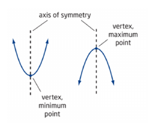

Quadratic Relation
Quadratic relations are relations whose equatio is in the form $sy=ax^2+bx+c$e where $sa\in \mathbb{R}$e , $sb\in \mathbb{R}$e , $sc\in \mathbb{R}$e , and $sa\ne 0$e .
Parabolas are quadratic relations which are U-shaped and symmetrical.
The vertex of quadratic relations are where:
- the curve changes direction, and
- is either the maximum of minimum (in terms of $sy$e ) point in the relation.
The axis of symmetry if the line that divides a digure into 2 congruent parts.

Finite differences are the differences found from the $sy$e values in tables with evenly spaced (constant difference) $sx$e valyes.
First differences are the difference between consecutive $sy$e values.
Second differences are the difference between consecutive first differences.
Note: if a relation is quadratic:
- its first differences are not constant, and
- its second differences are constant.